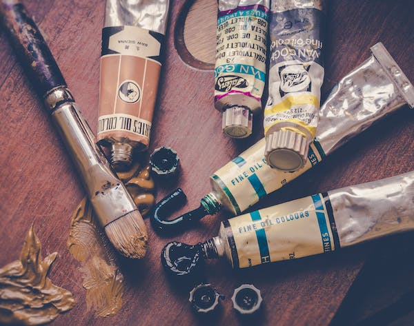
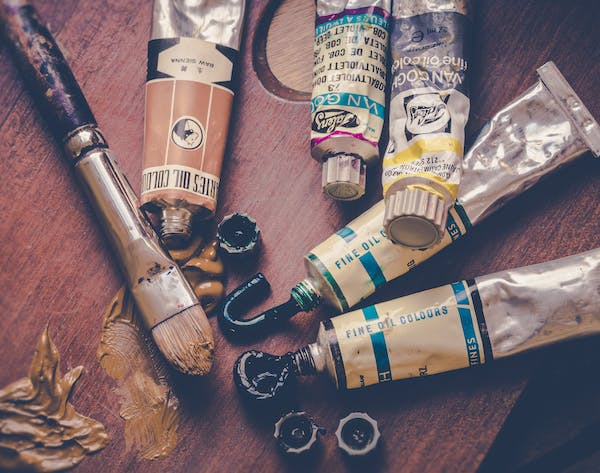

Hello and welcome to my web site. My name is Naya Pattillo and I am a freelance artist with over two years of experience. I specialize in watercolor and acrylic paintings, from buildings and people, to animals and nature. Below is my portfolio showcasing my style. If you have a project in mind and would like to commission a piece, don't hesitate to get in touch!
 Watercolor

Acrylic
Watercolor

Acrylic